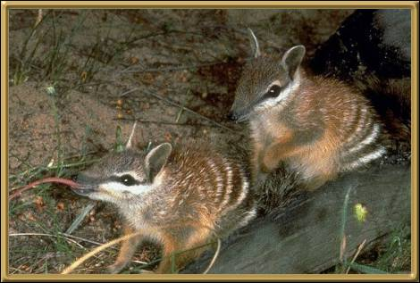

The Numbat is also called the Banded Anteater or the Marsupial Anteater because it mainly eats termites or 'white ants' with its very long sticky tongue. Apparently it will eat up to 10,000 a day and it swallows them whole! It is found only in a small area of Western Australia, near Perth, and is an endangered species.
Photographer: Unknown